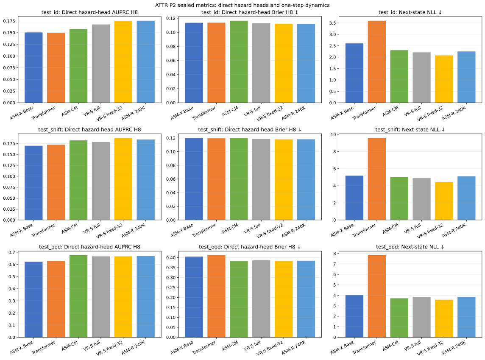
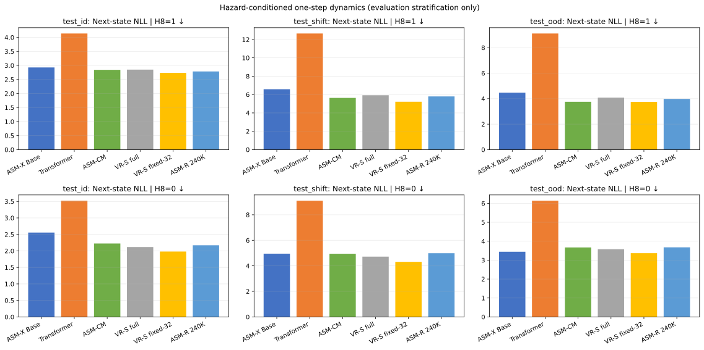
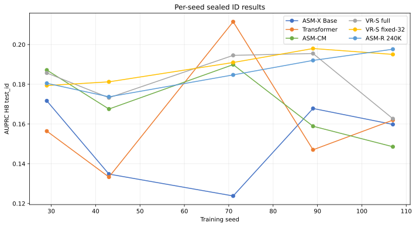
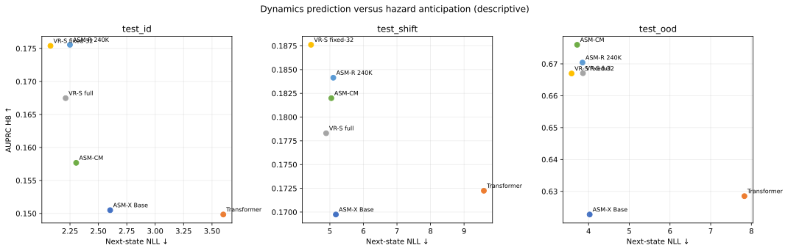
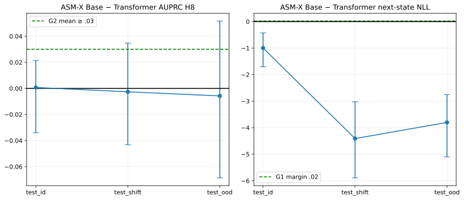
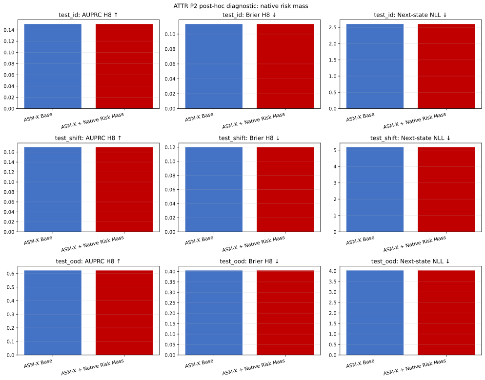
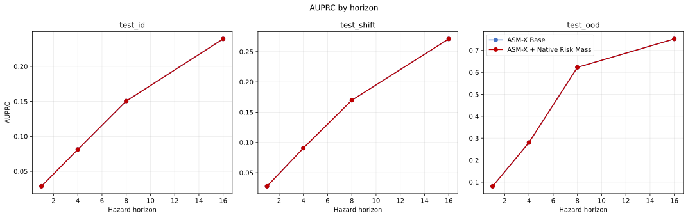
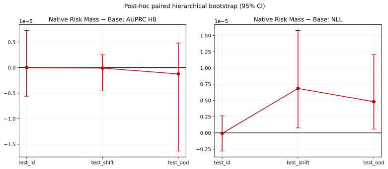
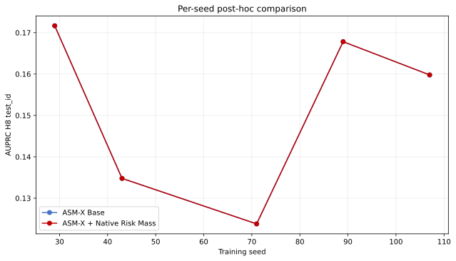

Benchmark-specific prediction only. G3/G4 were not evaluated; no safety or causal-intervention claim is permitted.





Result notes · Summary JSON · Dataset seal · Preseal
Exploratory and selected after P2 test results were observed. It does not modify registered G0–G5.




Diagnostic summary JSON · Pretrain manifest · Checkpoint seal